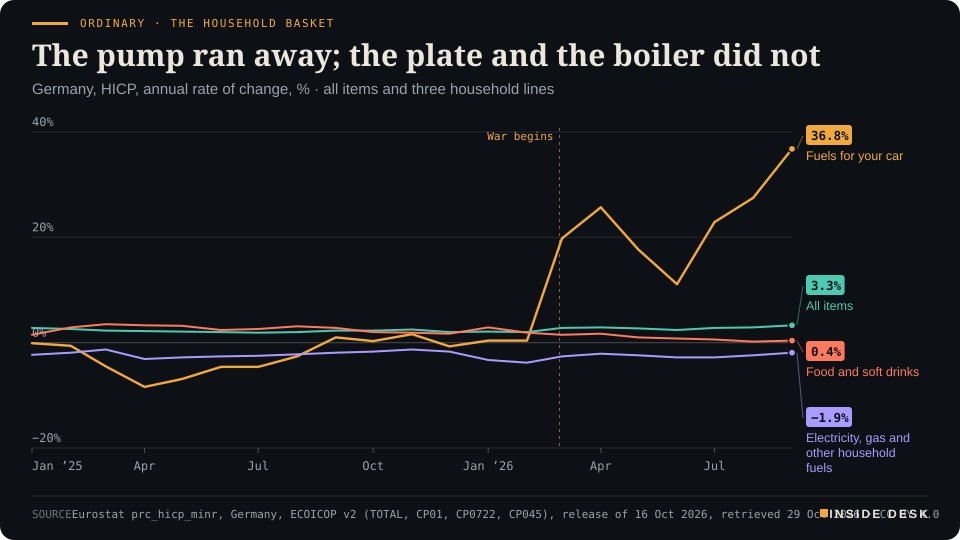
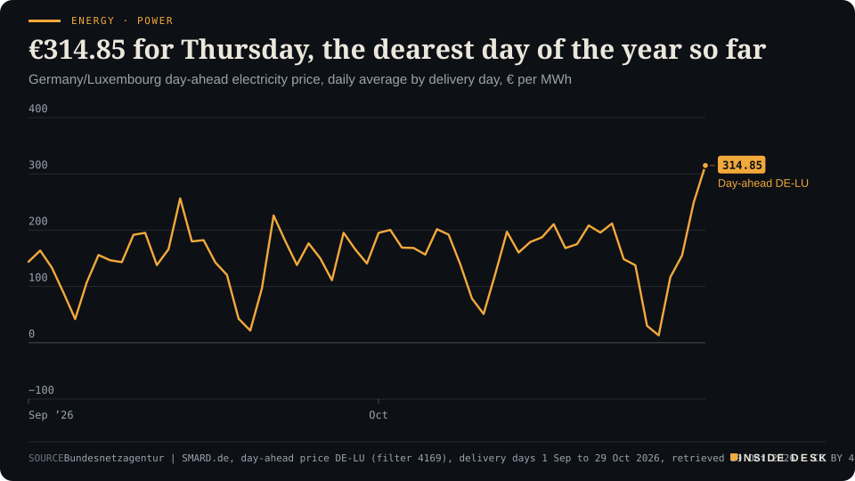

Inside Desk ePaper, Morning ePaper · Thu 29 Oct 2026
Thursday, 29 October 2026Always free
Inside Desk
Morning ePaperAvailable 06:30 CET · Berlin
Lead · Ordinary & Inherited Life
On the morning the ECB meets, Germany's price index splits into lines that barely know each other: fuel up 36.8% in a year, food up 0.4%, the bill for heating and light down 1.9%.
Germany's price index splits three ways on the morning the ECB meets: car fuel up 36.8% in a year, food up 0.4%, heating and light down 1.9%. Power for today cleared at €314.85, the Fed's chair met the payroll ledger, and Moscow counted drones by the hundred. Eleven desks, every number sourced.
Ordinary · The household basketThe pump ran away; the plate and the boiler did notGermany, HICP, annual rate of change, % · all items and three household lines

Line chart of annual price changes in Germany since January 2025, from Eurostat's harmonised index. Fuels for personal transport fall by up to 8.4% a year in April 2025, are near zero in early 2026, then jump to 19.8% in March 2026 and reach 36.8% in September 2026, the latest value. In September 2026 all items stand at 3.3%, food and non-alcoholic beverages at 0.4%, and electricity, gas and other household fuels at -1.9%, below zero throughout the period.
Source: Eurostat prc_hicp_minr, Germany, ECOICOP v2 (TOTAL, CP01, CP0722, CP045), release of 16 Oct 2026, retrieved 29 Oct 2026 · CC BY 4.0 · CSV
Geo-economics · p. 4
Markets & Macro · p. 5
Energy & Industry · p. 8
Climate & Weather · p. 15
The day in one sentencePetrol got cheaper, heating got cheaper, diesel and power got dearer, and the Fed's chair said hiring had picked up: on ECB morning, the receipts disagreed with one another and agreed with the ledger.
ContentsInside Desk · Morning ePaper29 October 2026
Germany's price index splits three ways on the morning the ECB meets: car fuel up 36.8% in a year, food up 0.4%, heating and light down 1.9%. Power for today cleared at €314.85, the Fed's chair met the payroll ledger, and Moscow counted drones by the hundred. Eleven desks, every number sourced.
11 edition pieces · 11 desks · Available 06:30 CET, 29 October 2026
22 ePaper extras, added , 29 October. They appear only in the ePaper and carry their own time.
17:30 Evening ePaper, updated live until 22:30 with an “Updated” time and a Latest page
Sun 10:00 The Sunday Magazine
Berlin time. Every issue is free.
How to read it
Swipe, use the arrow keys or the page strip. Tap any headline for the reading view. Press / to search, t for contents, +/− to zoom. Download the PDF.
LeadInside Desk · Morning ePaper29 October 2026
Ordinary & Inherited Life · Lead · 3 min
On the morning the ECB meets, Germany's price index splits into lines that barely know each other: fuel up 36.8% in a year, food up 0.4%, the bill for heating and light down 1.9%.
Germany’s inflation rate is a single number, and it is a useful one. In September Eurostat’s harmonised index put it at 3.3%, up from 2.0% in February1. But nobody pays an average. You pay a fuel bill, a supermarket bill and an energy bill, and this autumn those three lines are telling three different stories. On the day the European Central Bank meets, it is worth reading them one at a time.
Ordinary · The household basketThe pump ran away; the plate and the boiler did notGermany, HICP, annual rate of change, % · all items and three household lines
Line chart of annual price changes in Germany since January 2025, from Eurostat's harmonised index. Fuels for personal transport fall by up to 8.4% a year in April 2025, are near zero in early 2026, then jump to 19.8% in March 2026 and reach 36.8% in September 2026, the latest value. In September 2026 all items stand at 3.3%, food and non-alcoholic beverages at 0.4%, and electricity, gas and other household fuels at -1.9%, below zero throughout the period.
Source: Eurostat prc_hicp_minr, Germany, ECOICOP v2 (TOTAL, CP01, CP0722, CP045), release of 16 Oct 2026, retrieved 29 Oct 2026 · CC BY 4.0 · CSV
The pump. Fuels for the car cost 36.8% more in September than a year earlier, the highest reading since at least the start of 20251. Before the war began in late February the same line was rising by 0.4% a year; by March it was up 19.8%1. The ADAC’s figures from Wednesday show where it stands now: a litre of Super E10 at €2.084 on the national average, diesel at €2.289, more than 20 cents apart2. The two are moving in opposite directions. E10 fell 2.6 cents in a week while diesel rose 3.4 cents, with Brent at about $114 a barrel2. The automobile club blames tight international diesel markets and the seasonal demand for heating oil, and reads the petrol move as a sign that there had been room for cuts2.
The plate. Food and non-alcoholic drinks cost 0.4% more than a year ago1. In March 2025 that line was rising at 3.5%1. For a household that spends more at the checkout than at the pump, this is the quiet good news of the year, and it gets few headlines because nothing happened. A supermarket that keeps its prices is not a story. It is a supply chain, a wholesale contract and a lot of people doing their jobs.
The boiler. Electricity, gas and other household fuels cost 1.9% less in Germany than a year ago1. That line has been below zero in every month since January 20251. Across the euro area as a whole, the same line rose 9.4%1. Desk arithmetic: that is a gap of 11.3 percentage points between what a German household and the average euro-area household pay for heat and light, in the same month, with the same war on the news. Eurostat’s table does not say why; it only records the difference. The point for you is simpler: a figure from Brussels or Frankfurt about “energy prices” may not describe your meter at all.
What the committee sees. The ECB has to set one rate for all of it. Newsquawk’s preview expects the deposit rate to stay at 2.50% today, after September’s quarter-point rise, with energy the main argument for doing more and France’s bond market the main argument for caution3. It notes that euro-area energy inflation reached 18.9% in September and added 1.71 points to the headline rate of 3.8%3. …
Geo-economicsInside Desk · Morning ePaper29 October 2026
Geo-economics · 2 min
Overnight, the Iran file produced three signals and no agreement. The calendar that matters is a dull one: a reply to Qatar by the weekend, and the US vote on 3 November.
Iran’s foreign minister, Abbas Araghchi, said on Wednesday that Tehran remains “in close and ongoing contact with intermediaries” on ideas to implement its seven-day plan to reopen the Strait of Hormuz “in even less than a week”, AFP reports1. In the same post on X he said the armed forces were “fully prepared to defend the Homeland”1. Yesterday evening’s note reported Qatar’s draft and Tehran’s “not an offer”. This morning brings three new signals, and they do not point the same way.
The letter. US Vice President JD Vance wrote to Mohsen Rezaei, head of Iran’s Security Council, to revive peace negotiations, the Wall Street Journal reported, citing US officials, according to Reuters2. The denial. President Donald Trump denied reports that he had directed Vance to begin peace talks, suggesting the contact concerned Tehran’s need for “help with medical supplies”, Al Jazeera reports3. The pressure. Axios reported that mediators led by Qatar were pushing for a deal to restart US–Iran talks and prevent a resumption of war after the US midterms on 3 November1.
What each side asks first. Iran’s plan, conveyed through Qatar in September, asks Washington to lift its naval blockade of Iranian ports, unfreeze Iranian assets and lift oil sanctions, in exchange for reopening Hormuz14. Washington insists that Iran’s nuclear programme be on the table from the start4. Qatar is trying to bridge the two: UN inspectors at Iran’s bombed nuclear sites in return for some sanctions relief, according to the Axios report1. Iran is expected to give its final position on the Qatari draft by this weekend, Reuters reports4.
The market’s reading. Brent fell 0.7% to $114.50 overnight on the letter report2. “However, the decline remains limited,” said Yuki Takashima of Nomura2. A letter and a denial on the same night are not a contradiction. They are what talks look like before anyone is willing to call them talks. The dull indicator to watch is not a speech but a date: a written answer from Tehran by the weekend.
Geo-economics · Short item · ePaper extra, added
Brussels is weighing quotas or tariffs on Chinese chemicals, machinery and furniture. Beijing has opened a probe into a European chemical. The trade fight is moving to the quieter aisles.
The European Union is considering import restrictions on Chinese chemicals, machinery and furniture, in the form of quotas or tariffs, and could propose them as early as the first quarter of 2027, Industrylinqs reports, citing Bloomberg1. The Commission would use so-called safeguard measures, which must comply with World Trade Organisation rules1. The exact list of sectors may still change, and the Commission had not commented1.
The template is a number. Brussels wants to build on its approach to hybrid cars, where it recently agreed with Beijing on a cap of 350,000 imported Chinese hybrids a year1. A safeguard can be a fixed quota, or a tariff that applies only above a set quantity1. …
Geo-economics · Brief · ePaper extra, added
The Saudi-led coalition fighting Yemen’s Houthis said it destroyed a ballistic missile fired by the group towards the kingdom’s eastern region early on Thursday, Reuters reports1. On Wednesday the Houthis attacked Aden airport, Yemeni government forces said1. That followed the Houthis’ claim on Tuesday to have hit Saudi Arabia’s biggest oil refinery, a 550,000-barrel-a-day plant, which Saudi authorities had not immediately confirmed1. Oil traders weighed the attacks against signs of renewed diplomacy with Iran, and Brent still fell 0.7% to $114.501. An intercepted missile makes no headline in the price. A confirmed hit on a refinery would.
Markets & MacroInside Desk · Morning ePaper29 October 2026
Markets & Macro · 2 min
Samsung became the first tech company to earn more than 100 trillion won in a quarter. Its shares fell anyway, because the bar had already been set at the record.
Samsung Electronics reported third-quarter operating profit of 107.44 trillion won on Thursday, up 783.11% on a year earlier, CNBC reports1. Samsung said it is the first global technology company to top 100 trillion won of operating profit in a single quarter, and the fourth straight quarter of record revenue and profit1. Its shares fell about 5% in Seoul after the release1, and the Kospi index dropped 2.9% to 5,837.65 by the break, AFP reports, a day after a gain of nearly 7%32.
The miss, measured. Analysts’ weighted estimate, compiled by LSEG, was 107.66 trillion won of operating profit and 195.79 trillion won of revenue; Samsung reported 107.44 trillion and 195.25 trillion1. Desk arithmetic: the profit came in about 0.2% short of the forecast and revenue about 0.3% short. A rounding error, in other words, on a profit almost nine times last year’s.
The concentration, measured. The semiconductor business earned 106.5 trillion won of the 107.44 trillion operating profit1. Desk arithmetic: that is about 99%. “Anyone holding the stock today is really holding a memory maker with a phone business attached,” said Josh Gilbert of eToro1. He also said investors have been “so spoilt by the AI trade” that a record is treated as “the bare minimum”1. That is a fair description of a price that already contained the record before it was printed.
The dull part, which is the useful part. Samsung declared 30 trillion won in cash dividends for the quarter, 4,601 won per common and preferred share, and plans to return another 55 to 75 trillion won through dividends and buybacks this year, with the board to settle the total and the method in late January 20271. Cash paid is a fact. A share price after a release is an opinion about the next release.
The same pattern overnight. Alphabet fell about 10% in after-hours trading on heavy cash burn, wiping nearly $400 billion off its value, while Microsoft rose 3% on better-than-expected cash flows, Reuters reports2. Same AI boom, two different invoices. Nothing here is investment advice.
Markets & Macro · Short item · ePaper extra, added
Alphabet's cash burn knocked 10% off its shares after hours. Moody's, in a quieter note, reminded lenders that cheap money has an expiry date.
Alphabet reported negative free cash flow of $9.07 billion for the third quarter and kept its full-year capital spending forecast at $195 billion to $205 billion, NDTV Profit reports1. Its adjusted earnings per share and revenue missed expectations1. The shares fell about 10% after hours, wiping nearly $400 billion off its market value and pulling Nasdaq futures down 1%, Reuters reports2. Microsoft, by contrast, rose 3% on better-than-expected cash flows, helped by its Azure cloud business21.
Same boom, different invoices. “Both of Alphabet and Microsoft confirmed that the AI revenue generation is still solid,” said Jamie Hannah of VanEck2. His point about Alphabet was narrower: its advertising business is being hit by “the very thing which is the AI boom”2. The market did not punish AI. It punished a cash-flow line that turned negative.
Markets & Macro · Brief · ePaper extra, added
The Bank of Japan’s two-day policy meeting begins today and ends on Friday 30 October with a decision and statement, NDTV Profit reports; the market expects the benchmark rate to stay at 1.25%1. By the Tokyo lunch break the Nikkei 225 was up 0.3% at 64,131.28, and the dollar bought 157.64 yen, down from 158.03 on Wednesday, AFP reports2. Wall Street had closed higher after the Fed’s hold, the S&P 500 up 0.28% for a third straight gain1. Chip-equipment and memory names split: Kioxia and Advantest rose, Tokyo Electron and SoftBank fell2. The decision comes tomorrow. Until then, a quiet night for the yen is just that: a quiet night. Nothing here is investment advice.
Politics & InstitutionsInside Desk · Morning ePaper29 October 2026
Politics & Institutions · 2 min
Five days before the US midterms, more Americans have voted early than at this point four years ago. The tallies say who turned up. They do not say for whom, and the honest trackers keep saying so.
By Wednesday afternoon, more than 39 million Americans had already cast a ballot for the 3 November midterms, according to the University of Florida’s Election Lab and the Associated Press1. A day earlier the figure was 34 million2. In 2022 nearly 46 million people voted early in total, and Michael McDonald, who runs the Election Lab, says this year is on pace to pass that and is “running at least even” with 2018, the highest-turnout midterm since 19142.
Texas shows the scale. About 5.6 million Texans had voted by Wednesday morning, against roughly 4.2 million at this point in 2022, numbers the Post calls comparable to a presidential year1. Desk arithmetic: that is about a third more. Michigan had passed 1.3 million and Ohio nearly 1.2 million by Tuesday2.
The partisan breakdown is where you should slow down. In the 27 states that record party registration, about 45% of the roughly 16 million early voters are registered Democrats, 31% Republicans and 24% neither2. A Democratic data firm, TargetSmart, counts 3.8 million Hispanic early voters by Tuesday, against 2.35 million at the same point in 20221. Its chief executive, Tom Bonier, added the caveat himself: the data show who is voting, not how1. Registered Democrats can vote Republican; habits also shift, and McDonald thinks some voters are simply turning back from mail to in-person voting after the pandemic years2.
So read the early vote as a measure of participation, which is good news in itself, and not as a result. The results will come from the same dull machinery as always: county clerks, signature checks, scanners and canvass boards working to their state’s deadlines. Some states take days to finish counting mail ballots, so the first numbers on Tuesday night can lean one way and the final ones another. That is not a scandal. It is the order of work.
If you follow the night from Europe, the useful habit is the one Israel’s count taught this week: note the share of votes counted next to every number you see, and wait for the canvass before you decide what happened.
Politics & Institutions · Short item · ePaper extra, added
Israel began counting its absentee ballots at one in the morning. The seat totals have not moved for a day, and the opposition's leaders say they will wait for the final count before they choose.
Israel’s Central Elections Committee started counting the “double envelope” ballots at 01:00 local time, midnight in Berlin1. These are votes cast by soldiers, diplomats, hospital patients and prisoners, and the committee expects between 430,000 and 480,000 of them, with counting due to finish by Thursday evening2.
With 90.4% of votes counted, the seats have not moved: Netanyahu’s bloc 53, the Eisenkot-led bloc 48, the Arab-majority parties 191. Desk arithmetic: the opposition’s 48 and 19 make 67, six more than the 61 needed; the bloc without the Arab parties is 13 short.
Only 43% of US voters say their own member of Congress should be re-elected, according to a Gallup poll published on Wednesday and conducted from 1 to 19 October1. Just 15% say most members deserve to keep their seats. Both are record lows since Gallup began asking before the 1994 midterms; historically, between 50% and 69% wanted their own member back1.
Republican voters are a little warmer, at 51%, than Democrats at 45%; independents trail at 36%1.
The old rule was that people dislike Congress and like their own representative. That cushion has thinned. It is not a forecast, and Gallup did not offer one. It is a reminder that a vote is a job review, and next Tuesday about a third of the Senate and the whole House are up for one.
Psychology & BehaviourInside Desk · Morning ePaper29 October 2026
Psychology & Behaviour · 2 min
A UK Biobank study of 447,821 adults finds the highest rates of later depression and anxiety among people who remembered being thinner than their classmates and became heavier adults. The authors' own caveats are the best part.
Researchers at Huazhong University of Science and Technology in Wuhan used the UK Biobank, which enrolled more than half a million British adults between 2006 and 20101. At enrolment, at an average age of about 57, people were asked one question about their childhood: at ten, were you thinner than average, about average, or plumper? Their adult size was measured. Crossing the two answers gave nine patterns, and the team followed 447,821 people without a prior diagnosis for a median of 12.6 years1.
The group that stood out had been thinner at ten and was in the heaviest sixth as adults. Compared with people average at both ages, it had a 90% higher rate of hospital-diagnosed depression and a 58% higher rate of anxiety1. In raw counts, 1,604 of 16,851 people in that group received a depression diagnosis, about 9.5%, against about 4.3% of the average-to-average group1. Being thin as a child carried little extra risk on its own: those who stayed slimmer had roughly the reference rate of depression1.
Two details keep the finding honest. Adult size carried most of the signal: all three groups with a high adult BMI had the highest risks, whatever their childhood size1. And lifestyle habits, high blood pressure, type 2 diabetes and heart disease together accounted for only about 22% of the extra risk, which leaves most of it unexplained1.
The limits are plain. Childhood size was remembered in middle age, not measured; adult groups were relative bands, not clinical categories; the volunteers were white, healthier and better off than Britain as a whole; and the design shows association, not cause1. The authors suggest that a large change in body size may bring shifts in self-image, weight stigma and health worries along with metabolic changes, but they did not test that1.
So the useful reading for you is modest. A single adult weight on a chart says less than the path to it. If a GP is weighing someone, asking how they felt about their body over the years costs one minute and may say more than the scale. And since stigma is itself linked to worse mental health, the finding is a case for attention and support, not for blame1.
Psychology & Behaviour · Short item · ePaper extra, added
A ten-day diary study of Chinese students finds that giving up on goals and low mood feed each other from one day to the next. Ordinary avoidance did not show the same pattern.
“Lying flat” began as a slogan among young Chinese about refusing the endless race. Researchers writing in BMC Psychology studied its negative form, defined as diminished goal pursuit and less willingness to put in effort1. They asked 201 university students, average age 21, to fill in a diary on ten weekdays over two weeks, which yielded 1,863 usable entries1.
The result runs both ways. On days after students felt more anxious, they reported more lying flat; on days after more lying flat, they reported more anxiety1. Depressive symptoms showed the same back-and-forth. …
Researchers at the Medical University of South Carolina asked 189 young people aged 8 to 15 to give a three-minute speech to a camera, as if auditioning for a TV show, and measured cortisol in their saliva1. 107 had experienced at least one potentially traumatic event before the age of six; 82 had experienced none1.
Among those with early trauma, a smaller cortisol rise predicted a shift over the next two years towards anger and rule-breaking rather than anxiety; a larger rise predicted a shift towards anxiety1. The two groups’ cortisol responses did not differ on average. The authors call the pattern “complex”, and the sample is small1.
The plain lesson is about labels: the same stress response can point to different troubles in different children, so the history matters before the diagnosis.
Energy & IndustryInside Desk · Morning ePaper29 October 2026
Energy & Industry · 2 min
Germany's day-ahead power price has climbed four days running, to the dearest daily average of the year. SMARD's figures for Wednesday show why: the wind fell to a fifth of Sunday's, and gas and coal did the rest.
The German-Luxembourg day-ahead price for delivery today, Thursday 29 October, averages €314.85 per megawatt hour, according to SMARD, the Bundesnetzagentur’s data portal1. That is the highest daily average of 2026 so far, above the €256.55 of 14 September1. On Sunday 25 October, in the storm, it was €13.121. Desk arithmetic: today’s power costs about 24 times Sunday’s, and the price has risen on each of the four days since.
Energy · Power€314.85 for Thursday, the dearest day of the year so farGermany/Luxembourg day-ahead electricity price, daily average by delivery day, € per MWh

Line chart of the daily average German-Luxembourg day-ahead electricity price from 1 September to 29 October 2026, in euros per megawatt hour. It peaks at €256.55 on 14 September, falls to €30.12 on Saturday 24 October and €13.12 on Sunday 25 October during the storm, then climbs on four straight days to €116.57 on 26 October, €155.11 on 27 October and €249.21 on 28 October. The latest value is €314.85 for delivery on Thursday 29 October, the highest daily average of 2026 so far.
Source: Bundesnetzagentur | SMARD.de, day-ahead price DE-LU (filter 4169), delivery days 1 Sep to 29 Oct 2026, retrieved 29 Oct 2026 · CC BY 4.0 · CSV
Wednesday’s receipts. This morning SMARD added what the plants actually did yesterday1. Onshore wind generated 210,929 megawatt hours on Wednesday, against 1,019,966 MWh on Sunday1. Offshore farms added 106,567 MWh1. Desk arithmetic: onshore output was about a fifth of Sunday’s, and wind as a whole covered about 23% of Wednesday’s grid load of 1,383,280 MWh1. …
Energy & Industry · Short item · ePaper extra, added
Europe's benchmark gas price touched three figures for the first time since 2022. The households that feel it most will feel it later.
The Dutch front-month TTF contract, Europe’s benchmark for natural gas, briefly traded at €100 per megawatt hour at about 14:35 CET on Wednesday, RTÉ reports, citing ICE data1. That was up about 4% on the previous session and the first time at that level since December 20221. Prices are around triple their level before the Iran war, as disruption to Middle East LNG shipping keeps supply tight1.
Energy & Industry · Brief · ePaper extra, added
Brent crude fell 82 cents, or 0.7%, to $114.50 a barrel by 02:32 CET, and US WTI fell $1.04 to $101.74, CNBC reports1. On Wednesday Brent had risen 1.3% and WTI 3%1. The trigger was a Wall Street Journal report that US Vice President JD Vance had written to Mohsen Rezaei, head of Iran’s Security Council, to revive talks1. “However, the decline remains limited,” said Yuki Takashima of Nomura Securities, pointing to Houthi attacks and fears of US strikes after the 3 November midterms1. AFP’s later reading had Brent at $114.322. A letter moves a price by cents. Barrels move it by dollars. Nothing here is investment advice.
Money, FX & CommitteesInside Desk · Morning ePaper29 October 2026
Money, FX & Committees · Podium vs Print · 2 min
Kevin Warsh told reporters that American hiring has sped up. The payroll ledger agrees with him. It also shows how small a number can be and still be a better one.
Podium
“The jobless rate is lower than a year ago, and payroll growth is noticeably above last year's pace.”
Kevin Warsh, Chairman of the Federal Reserve, opening statement at his press conference, Wednesday 28 October 2026, from about 19:30 CET
Print68,000 · 26,000
Desk arithmetic: average monthly payroll gain from January to September 2026, against the same nine months of 2025. Unemployment: 4.2% in September 2026, 4.4% a year earlier.
U.S. Bureau of Labor Statistics, total non-farm payrolls and unemployment rate, seasonally adjusted (public data API), Latest month September 2026, retrieved 29 Oct 2026, 05:17 CET
The podium. After the Federal Reserve held its range at 3.75% to 4% on Wednesday evening, Chairman Kevin Warsh opened his press conference with the labour market. “The jobless rate is lower than a year ago, and payroll growth is noticeably above last year’s pace,” he said; “on the employment side of the Fed’s dual mandate, conditions are quite positive”1. Asked whether the economy was running too hot, he said: “That isn’t the judgment of most of my colleagues”3.
The print. The Bureau of Labor Statistics keeps the ledger he was quoting from. Total non-farm payrolls stood at 159,044,000 in September 2026, against 158,432,000 in December 20252. A year earlier the same nine months ran from 158,316,000 to 158,548,0002. Desk arithmetic: that is about 68,000 jobs a month this year against about 26,000 a month in the same stretch of 2025, and an increase of only 116,000 over the whole of last year. The unemployment rate was 4.2% in September, down from 4.4% a year earlier2.
The gap. There is not much of one, and that is the finding. Both halves of Warsh’s sentence check out against the public figures. What the podium leaves out is scale. Sixty-eight thousand a month is “noticeably above” a very slow year; it is not a hiring boom, and the BLS revises these levels as more payroll records arrive2. Warsh himself put the weight elsewhere: inflation, he said, has been “running above the Committee’s objective for close to 6 years”1.
The verdict. Podium and print agree, which is worth recording precisely because this column so often finds the opposite. For you, the useful reading is the dull one: a labour market adding jobs at a modest pace, with unemployment edging down, gives a central bank room to concentrate on prices, and that is what Warsh said the committee did1. The number that will decide whether his sentence survives is the next payroll release, not the next press conference. Nothing here is investment advice.
Money, FX & Committees · Short item · ePaper extra, added
Warsh's other news last night was about the calendar. From 2027 the Fed will set aside one meeting a year to think, with no rate decision and no statement.
The rate held at 3.75% to 4%. The more lasting decision on Wednesday was about the diary. Chairman Kevin Warsh said the Federal Open Market Committee will keep eight meetings a year, but in 2027 one of them “will focus exclusively on broad monetary policy strategy, with neither a vote on the federal funds rate nor a policy statement anticipated”1. In 2028 he expects two such meetings and six for setting policy1.
His reasoning was plain. …
Money, FX & CommitteesInside Desk · Morning ePaper29 October 2026
Money, FX & Committees · Brief · ePaper extra, added
The European Central Bank announces its decision at 14:15 CET today, 13:15 GMT1. Newsquawk’s preview expects the deposit rate to stay at 2.50%, where September’s quarter-point rise took it, and sees a second rise in a row as unlikely, though not impossible1. Markets, it says, price only a basis point or two of tightening for today and about 20 basis points by the end of 20261.
The pull in two directions is clear. Dutch gas (TTF) has come within a few euros of €100 per megawatt-hour, well above the €75 in the ECB’s adverse scenario1. Against that sit France’s bonds, which the preview expects to dominate the questions1. Desk note: the decision is the ECB’s to announce; this is a preview, not a guess. Nothing here is investment advice.
Ordinary & Inherited LifeInside Desk · Morning ePaper29 October 2026
Ordinary & Inherited Life · Short item · ePaper extra, added
A Debeka survey finds 51% of working-age adults in Germany could cover their bills for three months without income. 37% could not pay a surprise €3,000.
If your regular income stopped tomorrow, how long could you keep paying the rent, the groceries and the electricity? A representative survey for the insurer Debeka, reported by Der Spiegel on Wednesday, put that question to adults in Germany, leaving pensioners out1. Only 51% said they could cover their running costs for at least three months1. Twenty-two per cent said they could manage for one month; just under a quarter, 23%, could bridge half a year1.
Single bills are a test too. Thirty-seven per cent said they could not pay an unexpected €3,000 at short notice without getting into difficulty, most of all those aged 18 to 291. Only about one in seven would dip into pension savings in an emergency1.
The more encouraging line is in how people say they would react. Under pressure, 54% would first cut their spending, while only 14% would reduce their saving or pension contributions1. In other words, most households protect the long-term ledger and squeeze the short-term one. That is the right order.
For you, the survey suggests a modest, unheroic target. A buffer does not have to be six months on day one. One month of fixed costs, kept in an account you do not see every day, already moves you out of the most exposed group. Then a second month. The dull standing order beats the good intention every time.
Ordinary & Inherited Life · Brief · ePaper extra, added
Germany’s trade-union federation, the DGB, presented its own pension plan on Wednesday1. Its commission wants the pension level raised from today’s 48% to 53%, paid for in part by an occupational pension for all employees1. The retirement age would stay at 67 for those born from 1964, and the penalty-free pension after 45 years of contributions would remain1.
It is a reply to the government commission, whose recommendations have been on the table since June: link the retirement age to life expectancy, eight months more work for every extra year of life, and phase out the early pension after 45 years1. “A good pension for all generations is a question of political decisions,” said DGB chair Yasmin Fahimi1. Two written proposals on the same desk is how a payroll question should be argued.
Tech & ComputeInside Desk · Morning ePaper29 October 2026
Tech & Compute · 2 min
Microsoft's cloud grew 48% and still spent less than it planned, because someone else's datacentre capacity did not turn up on time.
Microsoft told you two things on Wednesday evening, and the second is more interesting. The first is the headline: Azure, its cloud, brought in $33.2 billion in the September quarter, up 48% on a year earlier, and is now the company’s biggest single business1,2. Total revenue rose 19% to $92.3 billion2.
The second is a delivery note. Microsoft spent $45.2 billion on capital expenditure and finance leases, short of the more than $50 billion it had expected2. The reason was not caution. “Some third-party capacity deliveries we expected in Q1 were delayed,” the finance chief, Amy Hood, told analysts, and she said the delays involve GPU-as-a-service providers1. Desk arithmetic: at least $4.8 billion of planned spending did not happen in the quarter.
So the company sold cloud computing about as fast as it could install it, and part of the installing was in other people’s hands. “We still have demand that exceeds supply,” Hood said1. To fill the gap, Microsoft says it did engineering work that let it sell unused capacity on servers it already had2. That is the least glamorous line in the release, and it may be the most useful one: squeezing the old machines before buying new ones.
The paperwork changes too. For the first time Microsoft reported Azure revenue in dollars, not only as a growth rate, under a new structure of two segments, Agents and Infra, and Devices and Consumer1,2. Free cash flow fell 27% to $18.63 billion, and Hood said the company may use other sources of funding “when it’s attractive to do so”1. The spending has not gone away; she expects it to speed up again in the second half of the fiscal year, as the delayed deliveries shift there1.
If you run IT for a firm, the lesson is plain. Capacity is a supply chain like any other, with contractors, lead times and late lorries. Ask your provider where its next tranche of servers is coming from, and when. Nothing here is investment advice.
Tech & Compute · Short item · ePaper extra, added
Delaware is drafting a legal form for businesses managed by AI agents. A congressional committee wants the paperwork by 9 November.
Delaware, where most large American companies are incorporated, is working on a new kind of company: one managed by an artificial-intelligence agent rather than a person1. Under the draft, the “Artificial Intelligence Company” could have any lawful purpose except banking, the agent would have to keep a log of its activities, and a single human or corporate member would be responsible for keeping it adequately capitalised1. That member would not be liable for the company’s debts unless it let the capital run short or used the company to break the law1. Organisations would have 30 months to apply to a regulatory sandbox1. State lawmakers are expected to consider it next year1.
On Wednesday the chair of the US House Oversight Committee, James Comer, asked the governor’s administration for documents. “We are concerned that Delaware’s [Artificial Intelligence Company] proposal could be used to protect powerful AI companies and their investors from responsibility for reckless harmful actions,” he wrote1. …
Tech & Compute · Brief · ePaper extra, added
Revenue is the number in the headline. Cash is the number that pays for the next datacentre. On Wednesday, Microsoft reported free cash flow of $18.63 billion for its September quarter, down 27% on a year earlier1. Alphabet, reporting the same afternoon, had more than $9 billion of negative free cash flow in the quarter, and Meta said last week that its cash flow had turned negative for the first time1. Alphabet’s cloud did not lack customers: Google Cloud revenue was $30.7 billion, up 103%2.
The pattern is simple. The buyers are there; the building is expensive, and it is paid for before the bills come back in. Watch the cash line, not the growth line. Nothing here is investment advice.
Health & CareInside Desk · Morning ePaper29 October 2026
Health & Care · 2 min
Pennsylvania's measles outbreak keeps growing. So does the number of people quietly rolling up a sleeve.
Pennsylvania’s health department said on Wednesday that 1,398 measles cases have been confirmed in 44 of the state’s counties so far this year, 38 of them since Monday1. There have been 265 hospitalisations and five measles-associated deaths1. Only four cases, under 1%, were in vaccinated people1. Desk arithmetic: about one case in five has needed a hospital.
Across the United States, the CDC counted 4,588 confirmed cases this year as of 22 October, with 43 new outbreaks2. For the whole of 2025 the figure was 2,2892. Desk arithmetic: with two months still to go, this year’s count is already about twice last year’s. The CDC’s explanation is not mysterious: kindergarten MMR coverage has slipped from 95.2% in 2019–20 to 92.4% in 2025–26, below the 95% that keeps measles from spreading, which leaves about 280,000 children at risk2.
Now the part that does not make headlines. In a typical month, Pennsylvania’s doctors and pharmacies give about 25,000 doses of MMR vaccine1. In September they gave more than 56,000, and in the first three weeks of October more than 53,0001. State nurses have run 229 pop-up clinics in the affected communities since late April1. About 300 health department staff are working with residents and providers, and the state’s measles team meets the CDC’s team every other week to go through cases1.
That is what a response looks like when it works: dashboards updated, clinics set up where the cases are, doses counted. It is slow, and a month of queues does not undo years of slipping coverage. It is still the right direction.
If you are not sure whether you had two doses, look for your record or ask your doctor; Pennsylvania’s advice is that people with two documented doses need no more, and adults with one dose or no records should talk to a clinician1. Two doses are 97% effective1. Measles is not seasonal, but it travels well in holiday crowds2.
Health & Care · Short item · ePaper extra, added
Saskatchewan has published the results of its first season giving babies an RSV antibody at birth, and starts the second.
Respiratory syncytial virus, RSV, is the winter cold that sends small babies to hospital. Last season the Canadian province of Saskatchewan offered every newborn a single injection of nirsevimab, a long-acting antibody, before leaving hospital. On Wednesday its health authority published how that went1.
It gave the antibody to 4,874 newborns, 78% of babies born during the RSV season, plus 472 high-risk children1. Desk arithmetic: that implies roughly 6,250 births in the season. Among the newborns who received it, fewer than 0.5% were admitted to hospital with RSV, and none needed intensive care1. Historically, more than 30% of infants admitted to hospital with RSV have needed intensive care, the authority says1. Healthy babies used to make up 35 to 46% of children admitted with RSV; among protected children last season that fell to 9%1.
The second season has started. Every baby born in the province between 1 October and 31 March is eligible before leaving the birthing site, and high-risk children up to two can have it too1. “Nirsevimab offers an important layer of protection during a baby’s most vulnerable months,” said Rachel Leavitt, who manages the programme1.
Health & Care · Brief · ePaper extra, added
Australia’s Therapeutic Goods Administration has reminded health professionals to follow each vaccine’s preparation instructions after reports of administration errors with Infanrix Hexa and Act-HIB1. Both come in two parts. The liquid in the syringe must be added to a vial holding a freeze-dried pellet or powder, the Hib component, and dissolved before injection1. Skip that step and the injection does not contain what the label promises. The product leaflets have been updated to make this clearer, and errors should be reported to the regulator1.
It is the dullest kind of safety notice, and the most useful: a label rewritten so the next tired nurse gets it right. If your child had these vaccines and you are unsure, ask your clinic; that is what the records are for.
Security & OrderInside Desk · Morning ePaper29 October 2026
Security & Order · 2 min
Moscow's mayor reported drone after drone shot down on the way to the capital overnight, well over a hundred in all. Nobody outside can check the tally. The airport restrictions are the part you can verify.
The drone warnings over the Moscow region began at about 22:00 local time on Wednesday, 20:00 in Berlin2. From then on the mayor, Sergei Sobyanin, posted running totals on Telegram. Vedomosti counted 47 drones he said were destroyed during the evening, and 119 more after midnight by the time of its report; the first group of the night was announced at 00:09 Moscow time, 22:09 in Berlin1. Ukrainian outlets tracking the same posts put the overall figure above 1203.
None of those numbers can be independently verified, as the Kyiv Post notes2. They are claims by one side about its own success, and they rise in steps because that is how they are posted. Read them as a lower bound on the size of the raid, not as a measure of what got through.
What can be checked is the effect on ordinary traffic. Rosaviatsiya, the federal air transport agency, imposed temporary restrictions on arrivals and departures at Vnukovo, Domodedovo and Zhukovsky “to ensure flight safety”1. Zhukovsky reopened about an hour later; the other two kept working under special coordination2. Two flights from Turkey were turned back because of the Vnukovo restrictions, according to ASTRA, citing TASS and air-traffic data2. Residents of Naro-Fominsk, about 56 km from the ring road, reported at least three explosions; there was no official explanation and no confirmed damage or casualties in the reports2,3.
This is not new. On 23 October all four main Moscow airports suspended operations, disrupting hundreds of flights2. The steady lesson is that the modern long-range raid is measured as much in schedules as in craters: diverted aircraft, missed connections, rebooked crews. Those costs show up in airline accounts and passenger complaints, which, unlike a mayor’s tally, someone eventually has to reconcile.
Security & Order · Short item · ePaper extra, added
The US Navy told ships with no need to pass through the Strait of Hormuz and the Gulf of Oman to keep away. The last similar public notice came in July, when the blockade of Iran began.
US Naval Forces Central Command issued an advisory on Wednesday through the Joint Maritime Information Center. “Vessels which do not need to transit the area are advised to remain well clear to avoid unnecessary delays to their voyage,” it said, and those that do should “plan additional transit time” for traffic density and “military blockade enforcement operations”1.
The notice also spells out the paperwork of a blockade. Neutral ships carrying neutral cargo, or sailing empty between neutral ports, may be questioned, visited and searched to confirm their intentions1. It was not clear what prompted it; the last similar public notice came in mid-July, when the blockade of Iranian shipping began, and Centcom did not immediately answer Bloomberg’s questions1.
The context is mixed. …
Security & Order · Brief · ePaper extra, added
Russia attacked Kharkiv with strike drones overnight, including jet-powered ones, according to Ukraine’s air force1. The mayor, Ihor Terekhov, reported a hit in the Kholodnohirskyi district at about 03:17 local time, 02:17 in Berlin, followed by a fire1. At 04:40 he reported a drone strike in the Saltivskyi district and later specified that an educational institution had been hit1. No casualty figures had been given when RBC-Ukraine published.
It was the city’s second drone night in three: late on 27 October, apartment blocks, private houses and a production building burned1. Strikes at night on a school building leave a daytime question for the city’s administrators: where the pupils learn this morning. Kharkiv has had years of practice in answering it.
Climate & WeatherInside Desk · Morning ePaper29 October 2026
Climate & Weather · 2 min
The American Southwest flooded last week. A low-end 'pineapple express' brings more rain before the soil has dried.
Just over a week after destructive flash floods in Arizona, Nevada, New Mexico and Utah, the US Southwest faces more rain1. Forecasters at weather.com expect two rounds: on Thursday and Friday over western Texas, New Mexico and Arizona, then from Saturday into Sunday over mainly Southern California, with rain and some high-mountain snow in the Southwest lingering into Monday in places1.
The source is a low-end “pineapple express”, an atmospheric river drawing tropical moisture from near Hawaii1. It is not a strong one. The concern is the ground it lands on. Last week’s 2 to 5 inches of rain left parts of northern Arizona, New Mexico, southern Colorado and southern Utah saturated, and some areas will get both rounds within three days1. The places of greatest concern, the forecasters say, are the north and east sides of the Phoenix metro, the Four Corners, and the foothills and high country of San Diego County1. Ground burnt by recent wildfires can produce fast debris flows even in modest rain1.
The US National Weather Service is cited as saying the total moisture in the air over parts of Arizona, Colorado, Nevada and Utah could be two to three times the late-October average, near record for Halloween weekend1. The forecasters add that stronger El Niño winters tend to make the Southwest wetter from autumn into spring1. That is their outlook, not ours, and it is a reason to check, not to panic.
The practical advice is old and good. If you planned to hike the slot canyons of southern Utah, southern Colorado or Arizona this weekend, the forecasters suggest you consider cancelling: flash floods move through them fast1. Plans can be rebooked. A desert in flood cannot be outrun.
Climate & Weather · Short item · ePaper extra, added
Dry enough to bring in the US crop, too dry for Russia's winter wheat, and finally some rain for Brazil's soybeans.
Bread prices begin in fields, and the fields depend on the week’s weather. DTN’s meteorologist John Baranick set out the picture on Wednesday1.
In the US Midwest it remains warm and mostly dry, good for harvesting. Scattered showers over Iowa and Illinois from Friday could slow work locally, but a much bigger system next week is expected to bring widespread and possibly heavy rain1. On the Plains that may disrupt fieldwork, but it could also help against the ongoing drought and improve soil moisture for winter wheat1.
In central Brazil, a stalled front is bringing showers that are “sorely needed” for soybean planting, even if amounts are only near normal; southern Brazil, too wet of late, is drying1. Argentina’s soils are mostly in good shape, but cold has slowed winter wheat and corn, and soybean planting in November could be pushed back if it stays chilly1.
Europe is mostly drier this week. Spain has stayed dry, “too common this fall”, while a system over the eastern Mediterranean could bring rain to Italy and south-eastern Europe from the weekend1. …
Climate & Weather · Brief · ePaper extra, added
Delhi’s air quality index rose to 229 on Wednesday, in the “poor” band, from 197 on Tuesday, ending four days of moderate air, according to the Central Pollution Control Board1. Of 58 stations, 41 read poor and one, Vivek Vihar, reached 316, “very poor”1. Transport was the largest single local source, at 19.3%; stubble burning contributed 0.9%1. Satellites counted 129 farm fires across six states on 27 October1.
The Air Quality Early Warning System expects moderate air from 29 to 31 October, and the India Meteorological Department forecasts moderate rain on Thursday1. Light winds still trap pollution, so the six-day outlook runs from moderate to poor1. If you are in Delhi, check the station nearest you, not just the city average: the spread on Wednesday ran from moderate to very poor.
Charts and dataInside Desk · Morning ePaper29 October 2026
Charts and data
Ordinary · The household basketThe pump ran away; the plate and the boiler did notGermany, HICP, annual rate of change, % · all items and three household lines
Line chart of annual price changes in Germany since January 2025, from Eurostat's harmonised index. Fuels for personal transport fall by up to 8.4% a year in April 2025, are near zero in early 2026, then jump to 19.8% in March 2026 and reach 36.8% in September 2026, the latest value. In September 2026 all items stand at 3.3%, food and non-alcoholic beverages at 0.4%, and electricity, gas and other household fuels at -1.9%, below zero throughout the period.
Source: Eurostat prc_hicp_minr, Germany, ECOICOP v2 (TOTAL, CP01, CP0722, CP045), release of 16 Oct 2026, retrieved 29 Oct 2026 · CC BY 4.0 · CSV
Energy · Power€314.85 for Thursday, the dearest day of the year so farGermany/Luxembourg day-ahead electricity price, daily average by delivery day, € per MWh
Line chart of the daily average German-Luxembourg day-ahead electricity price from 1 September to 29 October 2026, in euros per megawatt hour. It peaks at €256.55 on 14 September, falls to €30.12 on Saturday 24 October and €13.12 on Sunday 25 October during the storm, then climbs on four straight days to €116.57 on 26 October, €155.11 on 27 October and €249.21 on 28 October. The latest value is €314.85 for delivery on Thursday 29 October, the highest daily average of 2026 so far.
Source: Bundesnetzagentur | SMARD.de, day-ahead price DE-LU (filter 4169), delivery days 1 Sep to 29 Oct 2026, retrieved 29 Oct 2026 · CC BY 4.0 · CSV
Latest values
Series
Value
Date
Chart
Fuels for your car
36.8%
1 Sep 2026
The pump ran away; the plate and the boiler did not
All items
3.3%
1 Sep 2026
The pump ran away; the plate and the boiler did not
Food and soft drinks
0.4%
1 Sep 2026
The pump ran away; the plate and the boiler did not
Electricity, gas and other household fuels
-1.9%
1 Sep 2026
The pump ran away; the plate and the boiler did not
Day-ahead DE-LU
314.85
29 Oct 2026
€314.85 for Thursday, the dearest day of the year so far
Last data point of each series in the charts above, from the Inside Desk data archive. Sources under each chart.
Back pageInside Desk · Morning ePaper29 October 2026
Before you close the tab
The day in one sentence
Petrol got cheaper, heating got cheaper, diesel and power got dearer, and the Fed's chair said hiring had picked up: on ECB morning, the receipts disagreed with one another and agreed with the ledger.
One thing you can do this week
This week, keep the receipt from your next fill-up and write the litres and the price per litre on the back. Over the seven days to Wednesday, the German average for Super E10 fell 4.7 cents while diesel rose 2.5 cents, Tankerkönig reports from official MTS-K data 2. A month of your own receipts tells you what your car actually costs, which no national average can.
A habit, not advice.
What went right
The Southampton Island caribou herd in Nunavut is showing encouraging signs of recovery, a Government of Nunavut study drawing on Inuit knowledge has found, with Coral Harbour hunters and Elders reporting healthy animals and strong calf survival 1. The island's original herd was gone by the mid-1950s; 48 caribou were brought back from Coats Island in 1967 at the request of Coral Harbour Inuit 1. After a decline in the 2000s, ending commercial harvesting and setting a total allowable harvest helped steady the herd, with aerial surveys counting 12,054 animals in 2019 and 12,651 in 2023 1. A quota, a survey and fifteen careful interviews: dull machinery, working 1.
In euros at home
Diesel cost €2.259 a litre on the German average on Wednesday, against €2.049 for Super E10, both a cent cheaper than the day before, Tankerkönig reports from official MTS-K data at 17:01 2. Over the past week the two went separate ways: E10 fell 4.7 cents and diesel rose 2.5 cents 2. ADAC's figures in today's lead are a separate measure and run a few cents higher. Desk arithmetic: a 50-litre tank of diesel at Wednesday's average costs about €112.95, some €10.50 more than the same tank of E10.
Desk arithmetic on the cited national averages. Prices differ by station, region and time of day. Nothing here is advice.
Small words
Total allowable harvest
A ceiling on how many animals of a population may be taken in a season, set by the people who manage it and shared out among hunters. On Southampton Island in Nunavut it is 1,000 caribou, and the territory's environment department is not recommending a change, though some residents would like household tags raised from four to six 1. It is a number agreed before the season, so that nobody has to argue during it.
Marktbriefing — Tankerkönig (MTS-K data), 28 Oct 2026, data 04:01 and 17:01 CET, retrieved 29 Oct 2026, 05:30 CET
Commentary for information only. Not investment, legal, tax, medical or political advice. Inside Desk is free and reader-supported. Every number is sourced in the piece it appears in.
This issue has been updated.
All articles in this edition
Ordinary & Inherited Life · 3 min read
Ordinary Ledger: one receipt, three different stories
On the morning the ECB meets, Germany's price index splits into lines that barely know each other: fuel up 36.8% in a year, food up 0.4%, the bill for heating and light down 1.9%.
Germany’s inflation rate is a single number, and it is a useful one. In September Eurostat’s harmonised index put it at 3.3%, up from 2.0% in February1. But nobody pays an average. You pay a fuel bill, a supermarket bill and an energy bill, and this autumn those three lines are telling three different stories. On the day the European Central Bank meets, it is worth reading them one at a time.
Ordinary · The household basketThe pump ran away; the plate and the boiler did notGermany, HICP, annual rate of change, % · all items and three household lines
Line chart of annual price changes in Germany since January 2025, from Eurostat's harmonised index. Fuels for personal transport fall by up to 8.4% a year in April 2025, are near zero in early 2026, then jump to 19.8% in March 2026 and reach 36.8% in September 2026, the latest value. In September 2026 all items stand at 3.3%, food and non-alcoholic beverages at 0.4%, and electricity, gas and other household fuels at -1.9%, below zero throughout the period.
Source: Eurostat prc_hicp_minr, Germany, ECOICOP v2 (TOTAL, CP01, CP0722, CP045), release of 16 Oct 2026, retrieved 29 Oct 2026 · CC BY 4.0 · CSV
The pump. Fuels for the car cost 36.8% more in September than a year earlier, the highest reading since at least the start of 20251. Before the war began in late February the same line was rising by 0.4% a year; by March it was up 19.8%1. The ADAC’s figures from Wednesday show where it stands now: a litre of Super E10 at €2.084 on the national average, diesel at €2.289, more than 20 cents apart2. The two are moving in opposite directions. E10 fell 2.6 cents in a week while diesel rose 3.4 cents, with Brent at about $114 a barrel2. The automobile club blames tight international diesel markets and the seasonal demand for heating oil, and reads the petrol move as a sign that there had been room for cuts2.
The plate. Food and non-alcoholic drinks cost 0.4% more than a year ago1. In March 2025 that line was rising at 3.5%1. For a household that spends more at the checkout than at the pump, this is the quiet good news of the year, and it gets few headlines because nothing happened. A supermarket that keeps its prices is not a story. It is a supply chain, a wholesale contract and a lot of people doing their jobs.
The boiler. Electricity, gas and other household fuels cost 1.9% less in Germany than a year ago1. That line has been below zero in every month since January 20251. Across the euro area as a whole, the same line rose 9.4%1. Desk arithmetic: that is a gap of 11.3 percentage points between what a German household and the average euro-area household pay for heat and light, in the same month, with the same war on the news. Eurostat’s table does not say why; it only records the difference. The point for you is simpler: a figure from Brussels or Frankfurt about “energy prices” may not describe your meter at all.
What the committee sees. The ECB has to set one rate for all of it. Newsquawk’s preview expects the deposit rate to stay at 2.50% today, after September’s quarter-point rise, with energy the main argument for doing more and France’s bond market the main argument for caution3. It notes that euro-area energy inflation reached 18.9% in September and added 1.71 points to the headline rate of 3.8%3. Desk arithmetic: take energy’s 1.71 points away and about 2.1 points of the 3.8% remain. It also recalls President Christine Lagarde’s recent observation that there has not yet been a material response in wages3. That is the sentence to hold on to. Fuel at 36.8% is a shock. A shock becomes inflation in the full sense only when it moves into payslips, rents and service prices, and does not come back out.
The dull defence. Nothing in this ledger is comfortable for a commuter who drives a diesel van. But the lines that are behaving matter as much as the one that is not. The checkout and the meter have not followed the pump, so far, and a shock that stays in one line is a shock a household can plan around. The central bank, whatever it decides at 14:15 CET, will announce it on a timetable everyone knew, explain it at 14:45 CET, and publish the reasons. That machinery is not exciting. It is the reason a jump at the pump does not have to become a jump in everything.
What you can do. Read your own three lines rather than the headline. If the car is the problem, the ADAC’s standing advice is to fill up shortly before noon, when prices are lowest in the daily cycle, and to compare stations; the price jumps at 12:00 and then eases back slowly2. If heating is your worry, look at your actual tariff and its end date before reading another national average. And tomorrow, when Destatis publishes its first October figures4, look past the first digit to the lines underneath. Nothing here is investment advice.
Desk comment An average is a peace treaty between prices that are not speaking to each other.
A letter to Rezaei, a denial from Trump, and a plan that might take less than a week
Overnight, the Iran file produced three signals and no agreement. The calendar that matters is a dull one: a reply to Qatar by the weekend, and the US vote on 3 November.
Iran’s foreign minister, Abbas Araghchi, said on Wednesday that Tehran remains “in close and ongoing contact with intermediaries” on ideas to implement its seven-day plan to reopen the Strait of Hormuz “in even less than a week”, AFP reports1. In the same post on X he said the armed forces were “fully prepared to defend the Homeland”1. Yesterday evening’s note reported Qatar’s draft and Tehran’s “not an offer”. This morning brings three new signals, and they do not point the same way.
The letter. US Vice President JD Vance wrote to Mohsen Rezaei, head of Iran’s Security Council, to revive peace negotiations, the Wall Street Journal reported, citing US officials, according to Reuters2. The denial. President Donald Trump denied reports that he had directed Vance to begin peace talks, suggesting the contact concerned Tehran’s need for “help with medical supplies”, Al Jazeera reports3. The pressure. Axios reported that mediators led by Qatar were pushing for a deal to restart US–Iran talks and prevent a resumption of war after the US midterms on 3 November1.
What each side asks first. Iran’s plan, conveyed through Qatar in September, asks Washington to lift its naval blockade of Iranian ports, unfreeze Iranian assets and lift oil sanctions, in exchange for reopening Hormuz14. Washington insists that Iran’s nuclear programme be on the table from the start4. Qatar is trying to bridge the two: UN inspectors at Iran’s bombed nuclear sites in return for some sanctions relief, according to the Axios report1. Iran is expected to give its final position on the Qatari draft by this weekend, Reuters reports4.
The market’s reading. Brent fell 0.7% to $114.50 overnight on the letter report2. “However, the decline remains limited,” said Yuki Takashima of Nomura2. A letter and a denial on the same night are not a contradiction. They are what talks look like before anyone is willing to call them talks. The dull indicator to watch is not a speech but a date: a written answer from Tehran by the weekend.
Desk comment Diplomacy rarely announces itself. It leaves letters, denials and timetables, and you read them in that order.
Brussels is weighing quotas or tariffs on Chinese chemicals, machinery and furniture. Beijing has opened a probe into a European chemical. The trade fight is moving to the quieter aisles.
The European Union is considering import restrictions on Chinese chemicals, machinery and furniture, in the form of quotas or tariffs, and could propose them as early as the first quarter of 2027, Industrylinqs reports, citing Bloomberg1. The Commission would use so-called safeguard measures, which must comply with World Trade Organisation rules1. The exact list of sectors may still change, and the Commission had not commented1.
The template is a number. Brussels wants to build on its approach to hybrid cars, where it recently agreed with Beijing on a cap of 350,000 imported Chinese hybrids a year1. A safeguard can be a fixed quota, or a tariff that applies only above a set quantity1. The aim is the trade deficit with China, about €360 billion last year according to Bloomberg1.
The reply is a chemical. China’s Commerce Ministry has opened an anti-dumping investigation into imports of para-nitrotoluene from Europe just before sensitive trade talks over European tariffs on Chinese electric vehicles, the Beijing Post reports2. Earlier this month China warned that the EU should not underestimate its willingness and ability to protect its interests1.
Quotas and probes make poor headlines. They make good contracts: a quota is a number a purchasing department can plan around, which a threat is not. If your firm imports from China, the sector list is the document to watch, not the speeches.
Appears only in the ePaper · Commentary for information only. Not advice.
Geo-economics · Brief · ePaper extra, added
A missile over the Eastern Province, a strike on Aden
The Yemen front widened again overnight. The Saudi-led coalition says it shot the missile down.
The Saudi-led coalition fighting Yemen’s Houthis said it destroyed a ballistic missile fired by the group towards the kingdom’s eastern region early on Thursday, Reuters reports1. On Wednesday the Houthis attacked Aden airport, Yemeni government forces said1. That followed the Houthis’ claim on Tuesday to have hit Saudi Arabia’s biggest oil refinery, a 550,000-barrel-a-day plant, which Saudi authorities had not immediately confirmed1. Oil traders weighed the attacks against signs of renewed diplomacy with Iran, and Brent still fell 0.7% to $114.501. An intercepted missile makes no headline in the price. A confirmed hit on a refinery would.
Appears only in the ePaper · Commentary for information only. Not advice.
Markets & Macro · 2 min read
A record 107 trillion won, and a 5% fall
Samsung became the first tech company to earn more than 100 trillion won in a quarter. Its shares fell anyway, because the bar had already been set at the record.
Samsung Electronics reported third-quarter operating profit of 107.44 trillion won on Thursday, up 783.11% on a year earlier, CNBC reports1. Samsung said it is the first global technology company to top 100 trillion won of operating profit in a single quarter, and the fourth straight quarter of record revenue and profit1. Its shares fell about 5% in Seoul after the release1, and the Kospi index dropped 2.9% to 5,837.65 by the break, AFP reports, a day after a gain of nearly 7%32.
The miss, measured. Analysts’ weighted estimate, compiled by LSEG, was 107.66 trillion won of operating profit and 195.79 trillion won of revenue; Samsung reported 107.44 trillion and 195.25 trillion1. Desk arithmetic: the profit came in about 0.2% short of the forecast and revenue about 0.3% short. A rounding error, in other words, on a profit almost nine times last year’s.
The concentration, measured. The semiconductor business earned 106.5 trillion won of the 107.44 trillion operating profit1. Desk arithmetic: that is about 99%. “Anyone holding the stock today is really holding a memory maker with a phone business attached,” said Josh Gilbert of eToro1. He also said investors have been “so spoilt by the AI trade” that a record is treated as “the bare minimum”1. That is a fair description of a price that already contained the record before it was printed.
The dull part, which is the useful part. Samsung declared 30 trillion won in cash dividends for the quarter, 4,601 won per common and preferred share, and plans to return another 55 to 75 trillion won through dividends and buybacks this year, with the board to settle the total and the method in late January 20271. Cash paid is a fact. A share price after a release is an opinion about the next release.
The same pattern overnight. Alphabet fell about 10% in after-hours trading on heavy cash burn, wiping nearly $400 billion off its value, while Microsoft rose 3% on better-than-expected cash flows, Reuters reports2. Same AI boom, two different invoices. Nothing here is investment advice.
Desk comment When a record becomes the minimum, the record is not the news. The expectation is.
Markets & Macro · Short item · ePaper extra, added
Minus $9.07 billion of free cash, and the loans of 2021 come due
Alphabet's cash burn knocked 10% off its shares after hours. Moody's, in a quieter note, reminded lenders that cheap money has an expiry date.
Alphabet reported negative free cash flow of $9.07 billion for the third quarter and kept its full-year capital spending forecast at $195 billion to $205 billion, NDTV Profit reports1. Its adjusted earnings per share and revenue missed expectations1. The shares fell about 10% after hours, wiping nearly $400 billion off its market value and pulling Nasdaq futures down 1%, Reuters reports2. Microsoft, by contrast, rose 3% on better-than-expected cash flows, helped by its Azure cloud business21.
Same boom, different invoices. “Both of Alphabet and Microsoft confirmed that the AI revenue generation is still solid,” said Jamie Hannah of VanEck2. His point about Alphabet was narrower: its advertising business is being hit by “the very thing which is the AI boom”2. The market did not punish AI. It punished a cash-flow line that turned negative.
The quieter note. Moody’s Ratings warned in its Private Credit Quarterly that “refinancing risk will become more visible” as loans written in 2020–22 approach maturity, AFP reports3. Those loans were underwritten when rates were low, “often with higher leverage and more aggressive terms,” Moody’s said, and pressure is likely “even in the absence of additional rate hikes”3.
Neither item is a crash. Both are the same lesson in two sizes: what you spend today has to be paid for at tomorrow’s rate. Nothing here is investment advice.
Appears only in the ePaper · Commentary for information only. Not advice.
Markets & Macro · Brief · ePaper extra, added
Tokyo opens its own two-day meeting
After Washington's hold, the Bank of Japan begins deliberating today. The yen, for once, had a quiet night.
The Bank of Japan’s two-day policy meeting begins today and ends on Friday 30 October with a decision and statement, NDTV Profit reports; the market expects the benchmark rate to stay at 1.25%1. By the Tokyo lunch break the Nikkei 225 was up 0.3% at 64,131.28, and the dollar bought 157.64 yen, down from 158.03 on Wednesday, AFP reports2. Wall Street had closed higher after the Fed’s hold, the S&P 500 up 0.28% for a third straight gain1. Chip-equipment and memory names split: Kioxia and Advantest rose, Tokyo Electron and SoftBank fell2. The decision comes tomorrow. Until then, a quiet night for the yen is just that: a quiet night. Nothing here is investment advice.
Appears only in the ePaper · Commentary for information only. Not advice.
Politics & Institutions · 2 min read
Thirty-nine million ballots, and none of them counted yet
Five days before the US midterms, more Americans have voted early than at this point four years ago. The tallies say who turned up. They do not say for whom, and the honest trackers keep saying so.
By Wednesday afternoon, more than 39 million Americans had already cast a ballot for the 3 November midterms, according to the University of Florida’s Election Lab and the Associated Press1. A day earlier the figure was 34 million2. In 2022 nearly 46 million people voted early in total, and Michael McDonald, who runs the Election Lab, says this year is on pace to pass that and is “running at least even” with 2018, the highest-turnout midterm since 19142.
Texas shows the scale. About 5.6 million Texans had voted by Wednesday morning, against roughly 4.2 million at this point in 2022, numbers the Post calls comparable to a presidential year1. Desk arithmetic: that is about a third more. Michigan had passed 1.3 million and Ohio nearly 1.2 million by Tuesday2.
The partisan breakdown is where you should slow down. In the 27 states that record party registration, about 45% of the roughly 16 million early voters are registered Democrats, 31% Republicans and 24% neither2. A Democratic data firm, TargetSmart, counts 3.8 million Hispanic early voters by Tuesday, against 2.35 million at the same point in 20221. Its chief executive, Tom Bonier, added the caveat himself: the data show who is voting, not how1. Registered Democrats can vote Republican; habits also shift, and McDonald thinks some voters are simply turning back from mail to in-person voting after the pandemic years2.
So read the early vote as a measure of participation, which is good news in itself, and not as a result. The results will come from the same dull machinery as always: county clerks, signature checks, scanners and canvass boards working to their state’s deadlines. Some states take days to finish counting mail ballots, so the first numbers on Tuesday night can lean one way and the final ones another. That is not a scandal. It is the order of work.
If you follow the night from Europe, the useful habit is the one Israel’s count taught this week: note the share of votes counted next to every number you see, and wait for the canvass before you decide what happened.
Desk comment A queue tells you that people still trust the count. Only the count tells you anything else.
Politics & Institutions · Short item · ePaper extra, added
Double envelopes on the table, and four leaders at another
Israel began counting its absentee ballots at one in the morning. The seat totals have not moved for a day, and the opposition's leaders say they will wait for the final count before they choose.
Israel’s Central Elections Committee started counting the “double envelope” ballots at 01:00 local time, midnight in Berlin1. These are votes cast by soldiers, diplomats, hospital patients and prisoners, and the committee expects between 430,000 and 480,000 of them, with counting due to finish by Thursday evening2.
With 90.4% of votes counted, the seats have not moved: Netanyahu’s bloc 53, the Eisenkot-led bloc 48, the Arab-majority parties 191. Desk arithmetic: the opposition’s 48 and 19 make 67, six more than the 61 needed; the bloc without the Arab parties is 13 short.
The politics waits on the arithmetic. Senior figures in Eisenkot’s bloc told Haaretz they are “operating in the dark” and that their four leaders will not decide before the full seat distribution is known1. Yair Golan of the Democrats said he would meet Eisenkot and Yair Lapid on Thursday, which would be the first formal talks2. Likud has accused Arab parties, without evidence, of “stealing” the election; the committee says it will examine the complaint in its routine post-election review2.
The sensible order is the one the committee is following: count, check, publish. Then President Herzog consults the parties. Everything said before that is a bid, not a result.
43%: the lowest vote of confidence in thirty years
Fewer than half of US voters say their own member of Congress deserves another term, a Gallup record low since 1994.
Only 43% of US voters say their own member of Congress should be re-elected, according to a Gallup poll published on Wednesday and conducted from 1 to 19 October1. Just 15% say most members deserve to keep their seats. Both are record lows since Gallup began asking before the 1994 midterms; historically, between 50% and 69% wanted their own member back1.
Republican voters are a little warmer, at 51%, than Democrats at 45%; independents trail at 36%1.
The old rule was that people dislike Congress and like their own representative. That cushion has thinned. It is not a forecast, and Gallup did not offer one. It is a reminder that a vote is a job review, and next Tuesday about a third of the Senate and the whole House are up for one.
Appears only in the ePaper · Commentary for information only. Not advice.
Psychology & Behaviour · 2 min read
Thin at ten, heavier at fifty-seven: what a recalled childhood adds
A UK Biobank study of 447,821 adults finds the highest rates of later depression and anxiety among people who remembered being thinner than their classmates and became heavier adults. The authors' own caveats are the best part.
Researchers at Huazhong University of Science and Technology in Wuhan used the UK Biobank, which enrolled more than half a million British adults between 2006 and 20101. At enrolment, at an average age of about 57, people were asked one question about their childhood: at ten, were you thinner than average, about average, or plumper? Their adult size was measured. Crossing the two answers gave nine patterns, and the team followed 447,821 people without a prior diagnosis for a median of 12.6 years1.
The group that stood out had been thinner at ten and was in the heaviest sixth as adults. Compared with people average at both ages, it had a 90% higher rate of hospital-diagnosed depression and a 58% higher rate of anxiety1. In raw counts, 1,604 of 16,851 people in that group received a depression diagnosis, about 9.5%, against about 4.3% of the average-to-average group1. Being thin as a child carried little extra risk on its own: those who stayed slimmer had roughly the reference rate of depression1.
Two details keep the finding honest. Adult size carried most of the signal: all three groups with a high adult BMI had the highest risks, whatever their childhood size1. And lifestyle habits, high blood pressure, type 2 diabetes and heart disease together accounted for only about 22% of the extra risk, which leaves most of it unexplained1.
The limits are plain. Childhood size was remembered in middle age, not measured; adult groups were relative bands, not clinical categories; the volunteers were white, healthier and better off than Britain as a whole; and the design shows association, not cause1. The authors suggest that a large change in body size may bring shifts in self-image, weight stigma and health worries along with metabolic changes, but they did not test that1.
So the useful reading for you is modest. A single adult weight on a chart says less than the path to it. If a GP is weighing someone, asking how they felt about their body over the years costs one minute and may say more than the scale. And since stigma is itself linked to worse mental health, the finding is a case for attention and support, not for blame1.
Desk comment Your weight is a number. How you came to it, and how you were treated on the way, is the story.
Psychology & Behaviour · Short item · ePaper extra, added
Lying flat, one day at a time
A ten-day diary study of Chinese students finds that giving up on goals and low mood feed each other from one day to the next. Ordinary avoidance did not show the same pattern.
“Lying flat” began as a slogan among young Chinese about refusing the endless race. Researchers writing in BMC Psychology studied its negative form, defined as diminished goal pursuit and less willingness to put in effort1. They asked 201 university students, average age 21, to fill in a diary on ten weekdays over two weeks, which yielded 1,863 usable entries1.
The result runs both ways. On days after students felt more anxious, they reported more lying flat; on days after more lying flat, they reported more anxiety1. Depressive symptoms showed the same back-and-forth. The effects were small, with standardised coefficients between about 0.08 and 0.111. Experiential avoidance, the familiar habit of dodging unpleasant feelings, showed no reliable day-to-day link with either anxiety or depression in the same models1.
The authors are careful. In a statistical comparison, lying flat was not shown to be stronger than avoidance, and in one sensitivity check two of the paths only marginally held1. It is one sample of students and shows timing, not cause1.
What it offers is a scale that suits ordinary life. The loop is daily, which means the place to interrupt it is daily too: one small task finished today, rather than a grand plan for the year. The study did not test that remedy. It only shows where the loop turns.
In a South Carolina study, how much a child's cortisol rose during a stressful speech predicted different paths for those with early trauma.
Researchers at the Medical University of South Carolina asked 189 young people aged 8 to 15 to give a three-minute speech to a camera, as if auditioning for a TV show, and measured cortisol in their saliva1. 107 had experienced at least one potentially traumatic event before the age of six; 82 had experienced none1.
Among those with early trauma, a smaller cortisol rise predicted a shift over the next two years towards anger and rule-breaking rather than anxiety; a larger rise predicted a shift towards anxiety1. The two groups’ cortisol responses did not differ on average. The authors call the pattern “complex”, and the sample is small1.
The plain lesson is about labels: the same stress response can point to different troubles in different children, so the history matters before the diagnosis.
Appears only in the ePaper · Commentary for information only. Not advice.
Energy & Industry · 2 min read
€314.85 for today, and Wednesday's receipts explain it
Germany's day-ahead power price has climbed four days running, to the dearest daily average of the year. SMARD's figures for Wednesday show why: the wind fell to a fifth of Sunday's, and gas and coal did the rest.
The German-Luxembourg day-ahead price for delivery today, Thursday 29 October, averages €314.85 per megawatt hour, according to SMARD, the Bundesnetzagentur’s data portal1. That is the highest daily average of 2026 so far, above the €256.55 of 14 September1. On Sunday 25 October, in the storm, it was €13.121. Desk arithmetic: today’s power costs about 24 times Sunday’s, and the price has risen on each of the four days since.
Energy · Power€314.85 for Thursday, the dearest day of the year so farGermany/Luxembourg day-ahead electricity price, daily average by delivery day, € per MWh
Line chart of the daily average German-Luxembourg day-ahead electricity price from 1 September to 29 October 2026, in euros per megawatt hour. It peaks at €256.55 on 14 September, falls to €30.12 on Saturday 24 October and €13.12 on Sunday 25 October during the storm, then climbs on four straight days to €116.57 on 26 October, €155.11 on 27 October and €249.21 on 28 October. The latest value is €314.85 for delivery on Thursday 29 October, the highest daily average of 2026 so far.
Source: Bundesnetzagentur | SMARD.de, day-ahead price DE-LU (filter 4169), delivery days 1 Sep to 29 Oct 2026, retrieved 29 Oct 2026 · CC BY 4.0 · CSV
Wednesday’s receipts. This morning SMARD added what the plants actually did yesterday1. Onshore wind generated 210,929 megawatt hours on Wednesday, against 1,019,966 MWh on Sunday1. Offshore farms added 106,567 MWh1. Desk arithmetic: onshore output was about a fifth of Sunday’s, and wind as a whole covered about 23% of Wednesday’s grid load of 1,383,280 MWh1. Solar, in late October, added 102,699 MWh1.
Who filled the gap. Gas-fired plants generated 241,979 MWh on Wednesday, against 43,542 MWh on Sunday1. Lignite produced 267,508 MWh and hard coal 79,562 MWh1. Desk arithmetic: gas output rose about 5.6 times in three days, and gas, lignite and hard coal together covered about 43% of the load. That matters for your bill because the last plant needed in an hour tends to set that hour’s price, and the gas it burns has rarely been dearer. The front-month Dutch TTF contract, Europe’s gas benchmark, briefly touched €100 per MWh on Wednesday afternoon for the first time since December 2022, RTÉ reports, citing ICE data2.
The shape of today. The hourly prices are a timetable1. The cheapest hours are in the night, with a low of €231.00 between 02:00 and 03:00 CET. The dearest is 17:00 to 18:00 CET, at €559.631. Desk arithmetic: that evening hour costs about 56 cents per kilowatt hour on the wholesale market, before network charges, taxes and levies. If you are on a dynamic tariff, the dishwasher has a better evening after 21:00 than before. If you are on a fixed tariff, your supplier bought most of today’s power long ago, and this auction reaches you slowly and averaged out2.
The calm point. A still week in late autumn is not a crisis of the grid. The lights stayed on, and the old plants came back exactly as they are paid to. What the price records is the value of every megawatt hour that could have been stored on Sunday and sold today. That spread is public, on a government website, every morning. Nothing here is investment advice.
Desk comment The dearest hour of the day is a timetable, not a verdict. Read it before you switch on the oven.
Energy & Industry · Short item · ePaper extra, added
Gas at €100, and the bill arrives in 2027
Europe's benchmark gas price touched three figures for the first time since 2022. The households that feel it most will feel it later.
The Dutch front-month TTF contract, Europe’s benchmark for natural gas, briefly traded at €100 per megawatt hour at about 14:35 CET on Wednesday, RTÉ reports, citing ICE data1. That was up about 4% on the previous session and the first time at that level since December 20221. Prices are around triple their level before the Iran war, as disruption to Middle East LNG shipping keeps supply tight1.
The cushion is thin. EU storage is nearly 75% full and Germany’s around 60%, well below last year1. “Europe has less of a storage cushion than needed,” said Mathieu Utting of Rystad Energy, who noted LNG imports 30% below last year in the week to 9 October1. The German front-year baseload power contract rose 1.7% to €159.30 per MWh, the highest since June 20231.
Who pays, and when. Chemicals, fertiliser and steel makers buying near wholesale feel it at once, and some have cut output1. Households feel it later: retail contracts lag, so most of the hit to bills comes in 2027, RTÉ reports1. German gas tariffs for new customers are already up 55% this year, and EU governments have spent €17.9 billion this year cushioning oil and gas costs, according to a European Commission note1.
Desk arithmetic: today’s €100 is still less than a third of the roughly €340 peak of August 20221. A lag is not a gift, but it is time. Use it to check your contract’s end date. Nothing here is investment advice.
Appears only in the ePaper · Commentary for information only. Not advice.
Energy & Industry · Brief · ePaper extra, added
Brent gives back 82 cents on a letter
Oil slipped overnight on a report of renewed US outreach to Tehran. It is still above $114.
Brent crude fell 82 cents, or 0.7%, to $114.50 a barrel by 02:32 CET, and US WTI fell $1.04 to $101.74, CNBC reports1. On Wednesday Brent had risen 1.3% and WTI 3%1. The trigger was a Wall Street Journal report that US Vice President JD Vance had written to Mohsen Rezaei, head of Iran’s Security Council, to revive talks1. “However, the decline remains limited,” said Yuki Takashima of Nomura Securities, pointing to Houthi attacks and fears of US strikes after the 3 November midterms1. AFP’s later reading had Brent at $114.322. A letter moves a price by cents. Barrels move it by dollars. Nothing here is investment advice.
Appears only in the ePaper · Commentary for information only. Not advice.
Money, FX & Committees · 2 min read
Podium vs Print: "noticeably above last year's pace" and 68,000 a month
Kevin Warsh told reporters that American hiring has sped up. The payroll ledger agrees with him. It also shows how small a number can be and still be a better one.
Podium
“The jobless rate is lower than a year ago, and payroll growth is noticeably above last year's pace.”
Kevin Warsh, Chairman of the Federal Reserve, opening statement at his press conference, Wednesday 28 October 2026, from about 19:30 CET
Print68,000 · 26,000
Desk arithmetic: average monthly payroll gain from January to September 2026, against the same nine months of 2025. Unemployment: 4.2% in September 2026, 4.4% a year earlier.
U.S. Bureau of Labor Statistics, total non-farm payrolls and unemployment rate, seasonally adjusted (public data API), Latest month September 2026, retrieved 29 Oct 2026, 05:17 CET
The podium. After the Federal Reserve held its range at 3.75% to 4% on Wednesday evening, Chairman Kevin Warsh opened his press conference with the labour market. “The jobless rate is lower than a year ago, and payroll growth is noticeably above last year’s pace,” he said; “on the employment side of the Fed’s dual mandate, conditions are quite positive”1. Asked whether the economy was running too hot, he said: “That isn’t the judgment of most of my colleagues”3.
The print. The Bureau of Labor Statistics keeps the ledger he was quoting from. Total non-farm payrolls stood at 159,044,000 in September 2026, against 158,432,000 in December 20252. A year earlier the same nine months ran from 158,316,000 to 158,548,0002. Desk arithmetic: that is about 68,000 jobs a month this year against about 26,000 a month in the same stretch of 2025, and an increase of only 116,000 over the whole of last year. The unemployment rate was 4.2% in September, down from 4.4% a year earlier2.
The gap. There is not much of one, and that is the finding. Both halves of Warsh’s sentence check out against the public figures. What the podium leaves out is scale. Sixty-eight thousand a month is “noticeably above” a very slow year; it is not a hiring boom, and the BLS revises these levels as more payroll records arrive2. Warsh himself put the weight elsewhere: inflation, he said, has been “running above the Committee’s objective for close to 6 years”1.
The verdict. Podium and print agree, which is worth recording precisely because this column so often finds the opposite. For you, the useful reading is the dull one: a labour market adding jobs at a modest pace, with unemployment edging down, gives a central bank room to concentrate on prices, and that is what Warsh said the committee did1. The number that will decide whether his sentence survives is the next payroll release, not the next press conference. Nothing here is investment advice.
Desk comment A speech is right when the ledger can check it. That is rarer than it should be, and worth saying when it happens.
Money, FX & Committees · Short item · ePaper extra, added
Eight meetings, and one of them without a vote
Warsh's other news last night was about the calendar. From 2027 the Fed will set aside one meeting a year to think, with no rate decision and no statement.
The rate held at 3.75% to 4%. The more lasting decision on Wednesday was about the diary. Chairman Kevin Warsh said the Federal Open Market Committee will keep eight meetings a year, but in 2027 one of them “will focus exclusively on broad monetary policy strategy, with neither a vote on the federal funds rate nor a policy statement anticipated”1. In 2028 he expects two such meetings and six for setting policy1.
His reasoning was plain. Policy needs regular, “information-rich” check-ups on the near term, he said, but the committee also needs “time and space” for “thinking anew about big questions”, which he called focusing “on the left side of the decimal point”1. He described the schedule as “more than some administrative detail” and “an institutional choice”1.
It fits his other habit. In the same press conference he repeated that he does not favour forward guidance “absent exigent circumstances, absent a crisis”2. CNBC read the calendar change as part of an effort to reduce the Fed’s day-to-day pull on markets2.
For you, the practical effect is small and slightly reassuring. Fewer dates on which a rate can move means fewer days on which markets wait for one. And a committee that books time to argue about its own framework is doing the unglamorous work that keeps a framework credible. Nothing here is investment advice.
Appears only in the ePaper · Commentary for information only. Not advice.
Money, FX & Committees · Brief · ePaper extra, added
Frankfurt at 14:15: a hold is the forecast, the press conference is the event
The ECB decides today. The preview consensus is no change at 2.50%; the questions will be about France and energy.
The European Central Bank announces its decision at 14:15 CET today, 13:15 GMT1. Newsquawk’s preview expects the deposit rate to stay at 2.50%, where September’s quarter-point rise took it, and sees a second rise in a row as unlikely, though not impossible1. Markets, it says, price only a basis point or two of tightening for today and about 20 basis points by the end of 20261.
The pull in two directions is clear. Dutch gas (TTF) has come within a few euros of €100 per megawatt-hour, well above the €75 in the ECB’s adverse scenario1. Against that sit France’s bonds, which the preview expects to dominate the questions1. Desk note: the decision is the ECB’s to announce; this is a preview, not a guess. Nothing here is investment advice.
Appears only in the ePaper · Commentary for information only. Not advice.
Ordinary & Inherited Life · Short item · ePaper extra, added
Three months of cushion, for about half of us
A Debeka survey finds 51% of working-age adults in Germany could cover their bills for three months without income. 37% could not pay a surprise €3,000.
If your regular income stopped tomorrow, how long could you keep paying the rent, the groceries and the electricity? A representative survey for the insurer Debeka, reported by Der Spiegel on Wednesday, put that question to adults in Germany, leaving pensioners out1. Only 51% said they could cover their running costs for at least three months1. Twenty-two per cent said they could manage for one month; just under a quarter, 23%, could bridge half a year1.
Single bills are a test too. Thirty-seven per cent said they could not pay an unexpected €3,000 at short notice without getting into difficulty, most of all those aged 18 to 291. Only about one in seven would dip into pension savings in an emergency1.
The more encouraging line is in how people say they would react. Under pressure, 54% would first cut their spending, while only 14% would reduce their saving or pension contributions1. In other words, most households protect the long-term ledger and squeeze the short-term one. That is the right order.
For you, the survey suggests a modest, unheroic target. A buffer does not have to be six months on day one. One month of fixed costs, kept in an account you do not see every day, already moves you out of the most exposed group. Then a second month. The dull standing order beats the good intention every time.
Appears only in the ePaper · Commentary for information only. Not advice.
Ordinary & Inherited Life · Brief · ePaper extra, added
67, 53% and a works pension for everyone: the unions' counter-offer
The DGB's pension commission wants the retirement age kept at 67 and the pension level raised from 48% to 53%.
Germany’s trade-union federation, the DGB, presented its own pension plan on Wednesday1. Its commission wants the pension level raised from today’s 48% to 53%, paid for in part by an occupational pension for all employees1. The retirement age would stay at 67 for those born from 1964, and the penalty-free pension after 45 years of contributions would remain1.
It is a reply to the government commission, whose recommendations have been on the table since June: link the retirement age to life expectancy, eight months more work for every extra year of life, and phase out the early pension after 45 years1. “A good pension for all generations is a question of political decisions,” said DGB chair Yasmin Fahimi1. Two written proposals on the same desk is how a payroll question should be argued.
Appears only in the ePaper · Commentary for information only. Not advice.
Tech & Compute · 2 min read
The servers sold out; the landlords were late
Microsoft's cloud grew 48% and still spent less than it planned, because someone else's datacentre capacity did not turn up on time.
Microsoft told you two things on Wednesday evening, and the second is more interesting. The first is the headline: Azure, its cloud, brought in $33.2 billion in the September quarter, up 48% on a year earlier, and is now the company’s biggest single business1,2. Total revenue rose 19% to $92.3 billion2.
The second is a delivery note. Microsoft spent $45.2 billion on capital expenditure and finance leases, short of the more than $50 billion it had expected2. The reason was not caution. “Some third-party capacity deliveries we expected in Q1 were delayed,” the finance chief, Amy Hood, told analysts, and she said the delays involve GPU-as-a-service providers1. Desk arithmetic: at least $4.8 billion of planned spending did not happen in the quarter.
So the company sold cloud computing about as fast as it could install it, and part of the installing was in other people’s hands. “We still have demand that exceeds supply,” Hood said1. To fill the gap, Microsoft says it did engineering work that let it sell unused capacity on servers it already had2. That is the least glamorous line in the release, and it may be the most useful one: squeezing the old machines before buying new ones.
The paperwork changes too. For the first time Microsoft reported Azure revenue in dollars, not only as a growth rate, under a new structure of two segments, Agents and Infra, and Devices and Consumer1,2. Free cash flow fell 27% to $18.63 billion, and Hood said the company may use other sources of funding “when it’s attractive to do so”1. The spending has not gone away; she expects it to speed up again in the second half of the fiscal year, as the delayed deliveries shift there1.
If you run IT for a firm, the lesson is plain. Capacity is a supply chain like any other, with contractors, lead times and late lorries. Ask your provider where its next tranche of servers is coming from, and when. Nothing here is investment advice.
Desk comment A boom is measured in announcements; a business is measured in deliveries.
A company run by an agent, and a letter asking who answers for it
Delaware is drafting a legal form for businesses managed by AI agents. A congressional committee wants the paperwork by 9 November.
Delaware, where most large American companies are incorporated, is working on a new kind of company: one managed by an artificial-intelligence agent rather than a person1. Under the draft, the “Artificial Intelligence Company” could have any lawful purpose except banking, the agent would have to keep a log of its activities, and a single human or corporate member would be responsible for keeping it adequately capitalised1. That member would not be liable for the company’s debts unless it let the capital run short or used the company to break the law1. Organisations would have 30 months to apply to a regulatory sandbox1. State lawmakers are expected to consider it next year1.
On Wednesday the chair of the US House Oversight Committee, James Comer, asked the governor’s administration for documents. “We are concerned that Delaware’s [Artificial Intelligence Company] proposal could be used to protect powerful AI companies and their investors from responsibility for reckless harmful actions,” he wrote1. He wants communications back to January 2025, including “internal AI chat logs”, by 9 November1. The governor’s office says it is reviewing the letter1.
Law professors are split. One called the idea “a solution in search of a problem”; another said Delaware “would be irresponsible to ignore this”1.
The useful question is the old one. A company is a machine for deciding who pays when something goes wrong. Before anyone asks whether an agent can run a firm, ask who signs the invoice when it gets one wrong.
Appears only in the ePaper · Commentary for information only. Not advice.
Tech & Compute · Brief · ePaper extra, added
Three clouds, three cash-flow lines
Microsoft still makes more cash than it spends. Alphabet and Meta, for now, do not.
Revenue is the number in the headline. Cash is the number that pays for the next datacentre. On Wednesday, Microsoft reported free cash flow of $18.63 billion for its September quarter, down 27% on a year earlier1. Alphabet, reporting the same afternoon, had more than $9 billion of negative free cash flow in the quarter, and Meta said last week that its cash flow had turned negative for the first time1. Alphabet’s cloud did not lack customers: Google Cloud revenue was $30.7 billion, up 103%2.
The pattern is simple. The buyers are there; the building is expensive, and it is paid for before the bills come back in. Watch the cash line, not the growth line. Nothing here is investment advice.
Appears only in the ePaper · Commentary for information only. Not advice.
Health & Care · 2 min read
1,398 cases, and the vaccine queue doubled
Pennsylvania's measles outbreak keeps growing. So does the number of people quietly rolling up a sleeve.
Pennsylvania’s health department said on Wednesday that 1,398 measles cases have been confirmed in 44 of the state’s counties so far this year, 38 of them since Monday1. There have been 265 hospitalisations and five measles-associated deaths1. Only four cases, under 1%, were in vaccinated people1. Desk arithmetic: about one case in five has needed a hospital.
Across the United States, the CDC counted 4,588 confirmed cases this year as of 22 October, with 43 new outbreaks2. For the whole of 2025 the figure was 2,2892. Desk arithmetic: with two months still to go, this year’s count is already about twice last year’s. The CDC’s explanation is not mysterious: kindergarten MMR coverage has slipped from 95.2% in 2019–20 to 92.4% in 2025–26, below the 95% that keeps measles from spreading, which leaves about 280,000 children at risk2.
Now the part that does not make headlines. In a typical month, Pennsylvania’s doctors and pharmacies give about 25,000 doses of MMR vaccine1. In September they gave more than 56,000, and in the first three weeks of October more than 53,0001. State nurses have run 229 pop-up clinics in the affected communities since late April1. About 300 health department staff are working with residents and providers, and the state’s measles team meets the CDC’s team every other week to go through cases1.
That is what a response looks like when it works: dashboards updated, clinics set up where the cases are, doses counted. It is slow, and a month of queues does not undo years of slipping coverage. It is still the right direction.
If you are not sure whether you had two doses, look for your record or ask your doctor; Pennsylvania’s advice is that people with two documented doses need no more, and adults with one dose or no records should talk to a clinician1. Two doses are 97% effective1. Measles is not seasonal, but it travels well in holiday crowds2.
Desk comment An outbreak is counted in cases; the way out is counted in doses.
4,874 newborns, and none of the protected ones in intensive care
Saskatchewan has published the results of its first season giving babies an RSV antibody at birth, and starts the second.
Respiratory syncytial virus, RSV, is the winter cold that sends small babies to hospital. Last season the Canadian province of Saskatchewan offered every newborn a single injection of nirsevimab, a long-acting antibody, before leaving hospital. On Wednesday its health authority published how that went1.
It gave the antibody to 4,874 newborns, 78% of babies born during the RSV season, plus 472 high-risk children1. Desk arithmetic: that implies roughly 6,250 births in the season. Among the newborns who received it, fewer than 0.5% were admitted to hospital with RSV, and none needed intensive care1. Historically, more than 30% of infants admitted to hospital with RSV have needed intensive care, the authority says1. Healthy babies used to make up 35 to 46% of children admitted with RSV; among protected children last season that fell to 9%1.
The second season has started. Every baby born in the province between 1 October and 31 March is eligible before leaving the birthing site, and high-risk children up to two can have it too1. “Nirsevimab offers an important layer of protection during a baby’s most vulnerable months,” said Rachel Leavitt, who manages the programme1.
These are the authority’s own figures, not a trial, and a single season can flatter. But the machinery is the point: a dose given in the maternity ward, before anyone has to remember an appointment. If you are expecting a baby this winter, ask your midwife what your country offers against RSV, and when.
Appears only in the ePaper · Commentary for information only. Not advice.
Health & Care · Brief · ePaper extra, added
Two vaccines that come in two parts
Australia's medicines regulator reminds staff to mix the powder in. A small error with a simple fix.
Australia’s Therapeutic Goods Administration has reminded health professionals to follow each vaccine’s preparation instructions after reports of administration errors with Infanrix Hexa and Act-HIB1. Both come in two parts. The liquid in the syringe must be added to a vial holding a freeze-dried pellet or powder, the Hib component, and dissolved before injection1. Skip that step and the injection does not contain what the label promises. The product leaflets have been updated to make this clearer, and errors should be reported to the regulator1.
It is the dullest kind of safety notice, and the most useful: a label rewritten so the next tired nurse gets it right. If your child had these vaccines and you are unsure, ask your clinic; that is what the records are for.
Appears only in the ePaper · Commentary for information only. Not advice.
Security & Order · 2 min read
A night over Moscow, counted by the mayor and by the departure boards
Moscow's mayor reported drone after drone shot down on the way to the capital overnight, well over a hundred in all. Nobody outside can check the tally. The airport restrictions are the part you can verify.
The drone warnings over the Moscow region began at about 22:00 local time on Wednesday, 20:00 in Berlin2. From then on the mayor, Sergei Sobyanin, posted running totals on Telegram. Vedomosti counted 47 drones he said were destroyed during the evening, and 119 more after midnight by the time of its report; the first group of the night was announced at 00:09 Moscow time, 22:09 in Berlin1. Ukrainian outlets tracking the same posts put the overall figure above 1203.
None of those numbers can be independently verified, as the Kyiv Post notes2. They are claims by one side about its own success, and they rise in steps because that is how they are posted. Read them as a lower bound on the size of the raid, not as a measure of what got through.
What can be checked is the effect on ordinary traffic. Rosaviatsiya, the federal air transport agency, imposed temporary restrictions on arrivals and departures at Vnukovo, Domodedovo and Zhukovsky “to ensure flight safety”1. Zhukovsky reopened about an hour later; the other two kept working under special coordination2. Two flights from Turkey were turned back because of the Vnukovo restrictions, according to ASTRA, citing TASS and air-traffic data2. Residents of Naro-Fominsk, about 56 km from the ring road, reported at least three explosions; there was no official explanation and no confirmed damage or casualties in the reports2,3.
This is not new. On 23 October all four main Moscow airports suspended operations, disrupting hundreds of flights2. The steady lesson is that the modern long-range raid is measured as much in schedules as in craters: diverted aircraft, missed connections, rebooked crews. Those costs show up in airline accounts and passenger complaints, which, unlike a mayor’s tally, someone eventually has to reconcile.
Desk comment A claim of interceptions is a press release. A turned-back flight is a fact with a timetable.
Security & Order · Short item · ePaper extra, added
Stay clear unless you must: Washington's new notice for Hormuz
The US Navy told ships with no need to pass through the Strait of Hormuz and the Gulf of Oman to keep away. The last similar public notice came in July, when the blockade of Iran began.
US Naval Forces Central Command issued an advisory on Wednesday through the Joint Maritime Information Center. “Vessels which do not need to transit the area are advised to remain well clear to avoid unnecessary delays to their voyage,” it said, and those that do should “plan additional transit time” for traffic density and “military blockade enforcement operations”1.
The notice also spells out the paperwork of a blockade. Neutral ships carrying neutral cargo, or sailing empty between neutral ports, may be questioned, visited and searched to confirm their intentions1. It was not clear what prompted it; the last similar public notice came in mid-July, when the blockade of Iranian shipping began, and Centcom did not immediately answer Bloomberg’s questions1.
The context is mixed. Oil flows out of the Gulf have climbed back to near pre-war levels, helped by shuttle tankers that run in and out to meet larger ships waiting in the Gulf of Oman, while Iran’s own crude exports are close to zero1. At the same time, Bloomberg counts almost 30 Iranian attacks on ships in October, a wartime high1.
For you, the practical reading is in the logistics, not the rhetoric: longer voyage times, more boardings, harder questions from insurers. Those are the costs shipping firms and their customers carry. Nothing here is investment advice.
Appears only in the ePaper · Commentary for information only. Not advice.
Security & Order · Brief · ePaper extra, added
Kharkiv: a fire in Kholodnohirskyi, a school building hit in Saltivskyi
On the same night that Moscow counted drones, Kharkiv's mayor reported two strikes on his city before dawn.
Russia attacked Kharkiv with strike drones overnight, including jet-powered ones, according to Ukraine’s air force1. The mayor, Ihor Terekhov, reported a hit in the Kholodnohirskyi district at about 03:17 local time, 02:17 in Berlin, followed by a fire1. At 04:40 he reported a drone strike in the Saltivskyi district and later specified that an educational institution had been hit1. No casualty figures had been given when RBC-Ukraine published.
It was the city’s second drone night in three: late on 27 October, apartment blocks, private houses and a production building burned1. Strikes at night on a school building leave a daytime question for the city’s administrators: where the pupils learn this morning. Kharkiv has had years of practice in answering it.
Appears only in the ePaper · Commentary for information only. Not advice.
Climate & Weather · 2 min read
Wet ground, a second soaking and a Halloween weekend
The American Southwest flooded last week. A low-end 'pineapple express' brings more rain before the soil has dried.
Just over a week after destructive flash floods in Arizona, Nevada, New Mexico and Utah, the US Southwest faces more rain1. Forecasters at weather.com expect two rounds: on Thursday and Friday over western Texas, New Mexico and Arizona, then from Saturday into Sunday over mainly Southern California, with rain and some high-mountain snow in the Southwest lingering into Monday in places1.
The source is a low-end “pineapple express”, an atmospheric river drawing tropical moisture from near Hawaii1. It is not a strong one. The concern is the ground it lands on. Last week’s 2 to 5 inches of rain left parts of northern Arizona, New Mexico, southern Colorado and southern Utah saturated, and some areas will get both rounds within three days1. The places of greatest concern, the forecasters say, are the north and east sides of the Phoenix metro, the Four Corners, and the foothills and high country of San Diego County1. Ground burnt by recent wildfires can produce fast debris flows even in modest rain1.
The US National Weather Service is cited as saying the total moisture in the air over parts of Arizona, Colorado, Nevada and Utah could be two to three times the late-October average, near record for Halloween weekend1. The forecasters add that stronger El Niño winters tend to make the Southwest wetter from autumn into spring1. That is their outlook, not ours, and it is a reason to check, not to panic.
The practical advice is old and good. If you planned to hike the slot canyons of southern Utah, southern Colorado or Arizona this weekend, the forecasters suggest you consider cancelling: flash floods move through them fast1. Plans can be rebooked. A desert in flood cannot be outrun.
Desk comment The second rain is dangerous because of the first.
Climate & Weather · Short item · ePaper extra, added
Harvest weather, continent by continent
Dry enough to bring in the US crop, too dry for Russia's winter wheat, and finally some rain for Brazil's soybeans.
Bread prices begin in fields, and the fields depend on the week’s weather. DTN’s meteorologist John Baranick set out the picture on Wednesday1.
In the US Midwest it remains warm and mostly dry, good for harvesting. Scattered showers over Iowa and Illinois from Friday could slow work locally, but a much bigger system next week is expected to bring widespread and possibly heavy rain1. On the Plains that may disrupt fieldwork, but it could also help against the ongoing drought and improve soil moisture for winter wheat1.
In central Brazil, a stalled front is bringing showers that are “sorely needed” for soybean planting, even if amounts are only near normal; southern Brazil, too wet of late, is drying1. Argentina’s soils are mostly in good shape, but cold has slowed winter wheat and corn, and soybean planting in November could be pushed back if it stays chilly1.
Europe is mostly drier this week. Spain has stayed dry, “too common this fall”, while a system over the eastern Mediterranean could bring rain to Italy and south-eastern Europe from the weekend1. Ukraine’s soil moisture is favourable, but western Russia looks dry, which DTN calls “concerning” for winter wheat establishment1. China’s corn and soybean harvest has had good weather1.
None of this sets a price on its own. It is the slow ledger of a growing season, written a week at a time. Nothing here is investment advice.
Appears only in the ePaper · Commentary for information only. Not advice.
Climate & Weather · Brief · ePaper extra, added
229 in Delhi, and moderate rain on the way
The capital's air slipped back to 'poor' after four better days. The early-warning system expects moderate air for the rest of the week.
Delhi’s air quality index rose to 229 on Wednesday, in the “poor” band, from 197 on Tuesday, ending four days of moderate air, according to the Central Pollution Control Board1. Of 58 stations, 41 read poor and one, Vivek Vihar, reached 316, “very poor”1. Transport was the largest single local source, at 19.3%; stubble burning contributed 0.9%1. Satellites counted 129 farm fires across six states on 27 October1.
The Air Quality Early Warning System expects moderate air from 29 to 31 October, and the India Meteorological Department forecasts moderate rain on Thursday1. Light winds still trap pollution, so the six-day outlook runs from moderate to poor1. If you are in Delhi, check the station nearest you, not just the city average: the spread on Wednesday ran from moderate to very poor.